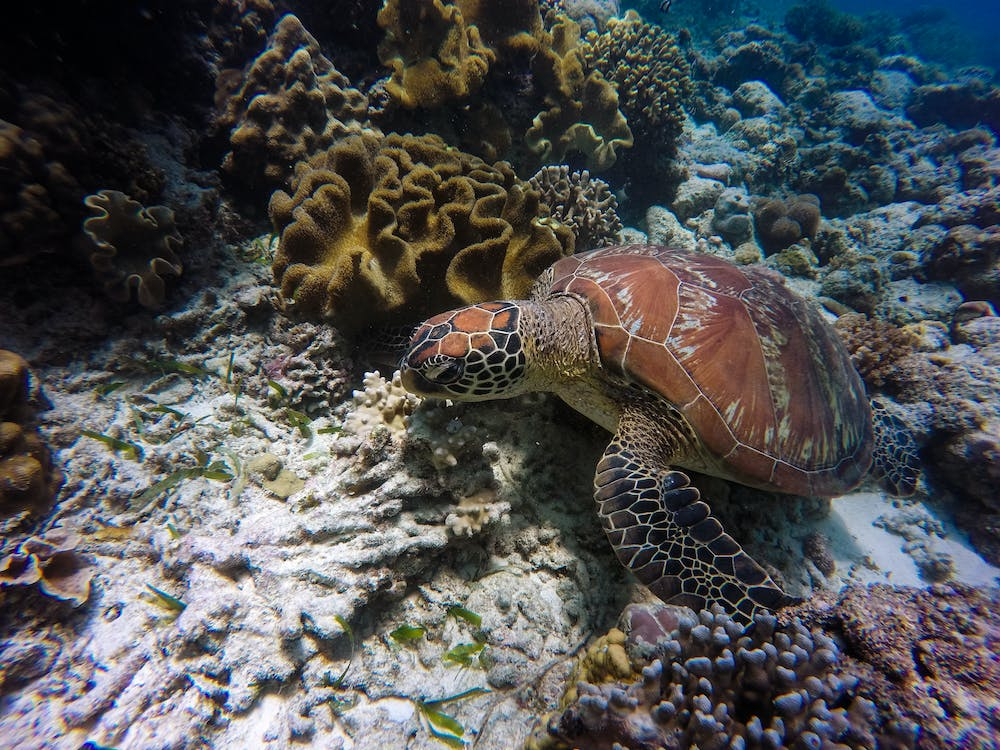
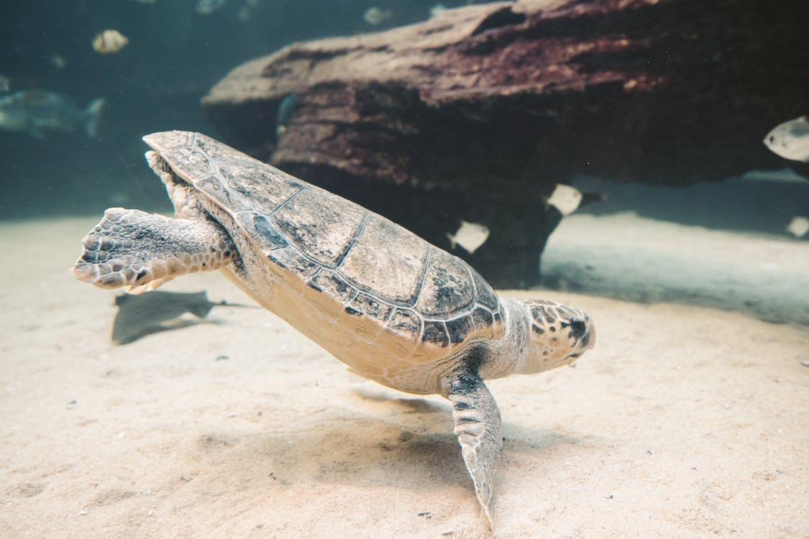

Bentota Turtle Hatchery
Things to know

Location : The Kasgoda Turtle Hatchery is conveniently located a short 10 to 15 minutes tuk-tuk ride south from Bentota.
Highlights: A visit to the Kasgoda Turtle Hatchery promises an engaging experience as you witness the growth of baby turtles.
Things to keep in mind: It is important to refrain from using bright lights or disturbing the nesting turtles to ensure their well-being.
Price : The approximate starting price for entry to the hatchery is 500 LKR.
Gallery
More about Bentota Hatchery
The hatchery also conducts educational programs and awareness campaigns to promote the conservation of sea turtles. Visitors have the opportunity to learn about the threats faced by these magnificent creatures, such as habitat destruction, pollution, and poaching. By visiting the hatchery, you not only support their conservation efforts but also gain valuable knowledge about the importance of protecting marine life.